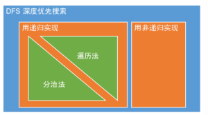

二叉树结构定义
struct TreeNode {
int val;
TreeNode* left;
TreeNode* right;
TreeNode(int val) : val(val), left(nullptr), right(nullptr) {}
};
分治算法
分治法的重点在于问题的划分和返回状态的定义
遍历法 VS 分治法
递归是实现方式，遍历法和分治法是可以用递归实现的算法思想- Result in parameter vs Result in return value，所以
分治法一般不需要全局变量，可实现并行。 遍历法的结果要改参数，返回参数；分治法的结果直接返回，是个更好的接口，因为传入的参数最好不要改。递归是自顶向下Top down VS分治是自底向上Bottom up

递归 VS 非递归
- 非递归其实是模拟递归用的Stack
为什么自己模拟的可以，调用计算机的就不行呢 ？
-
因为
heap memory ≈ memory size，new出的stack在里面，不用担心栈溢出。 -
而
stack memory ≈ process memory是计算机分给每个程序的一个很小的独占的空间，所以递归的深度太深，容易栈溢出。
前序遍历
递归
def preorderTraversal(root):
res = []
self.traversal(root, res)
return res
def traversal(root, res):
if not root:
return
res.append(root.val)
traversal(root.left, res)
traversal(root.right, res)
分治
分治法的返回状态定义：子树的先序遍历结果 List
def preorderTraversal(root):
# end condition
if not root:
return []
# divide & conquer
left = preorderTraversal(root.left)
right = preorderTraversal(root.right)
# combine
res = []
res.append(root.val)
res.extend(left)
res.extend(right)
# return result
return res
非递归
# 1. 首先把root入栈
# 2. 出栈的元素同时放进结果列表
# 3. 右左儿子依次入栈，这样出栈的顺序是先左后右（根节点已出）
# 4. 按照次序继续，直到stack为空
def preorderTraversal(root):
if not root:
return []
stack, res = [root], []
while stack:
node = stack.pop()
res.append(node.val)
if node.right:
stack.append(node.right)
if node.left:
stack.append(node.left)
return res
中序遍历
递归
def inorderTraversal(root):
res = []
self.traversal(root, res)
return res
def traversal(root, res):
if not root:
return
traversal(root.left, res)
res.append(root.val)
traversal(root.right, res)
分治
def inorderTraversal(root):
# end condition
if not root:
return []
# divide & conquer
left = preorderTraversal(root.left)
right = preorderTraversal(root.right)
# combine
res = []
res.extend(left)
res.append(root.val)
res.extend(right)
# return result
return res
非递归
- 对于任一结点
cur， - 若其左孩子不为空，则将
cur入栈并将cur的左孩子置为当前的cur，然后对当前结点cur再进行相同的处理； - 若其左孩子为空，则取栈顶元素并进行出栈操作，访问该栈顶结点，然后将当前的
cur置为栈顶结点的右孩子； - 直到
cur为None并且栈为空则遍历结束
class Solution:
def inorderTraversal(self, root: TreeNode) -> List[int]:
if not root:
return []
stack = []
cur = root
res = []
while stack or cur:
if cur: # 左子树入栈到底，找到最左孩子。
stack.append(cur)
cur = cur.left
else:
cur = stack.pop()
res.append(cur.val)
cur = cur.right
return res
后序遍历
递归
def postorderTraversal(root):
res = []
self.traversal(root, res)
return res
def traversal(root, res):
if not root:
return
traversal(root.left, res)
traversal(root.right, res)
append(root.val)
分治
def postorderTraversal(root):
# end condition
if not root:
return []
# divide & conquer
left = preorderTraversal(root.left)
right = preorderTraversal(root.right)
# combine
res = []
res.extend(left)
res.extend(right)
res.append(root.val)
# return result
return res
非递归
pass
层序遍历
-
使用队列数据结构：collections.deque
-
队列初始化，根节点先入队列：queue = [root]
-
查看队列是否为空：while queue
-
如果分层打印，则先立即缓存该层大小：n = len(queue), for _ range(n)
-
遍历该层节点依次出队，查看左右孩子，存在即入队尾。
Python
from collections import deque
class Solution:
def levelOrder(self, root: TreeNode) -> List[List[int]]:
if not root: return []
res = []
queue = deque()
queue.append(root)
while queue:
cur_level = []
n = len(queue)
for _ in range(n):
node = queue.popleft()
cur_level.append(node.val)
if node.left: queue.append(node.left)
if node.right: queue.append(node.right)
res.append(cur_level)
return res
CPP
class Solution {
public:
vector<int> preorderTraversal(TreeNode* root) {
vector<int> res;
if(root == nullptr) retur res;
stack<TreeNode*> stk;
stk.push(root);
while(!stk.empty()) {
TreeNode* node = stk.top();
stk.pop();
res.push_back(node->val);
if(node->right) stk.push(node->right);
if(node->left) stk.push(node->left);
}
return res;
}
};
之字层序遍历
class Solution:
def zigzagLevelOrder(self, root: TreeNode) -> List[List[int]]:
if not root:
return []
res = []
queue = collections.deque()
queue.append(root)
level = 0
while queue:
level_cur = []
n = len(queue)
for _ in range(n):
node = queue.popleft()
level_cur.append(node.val)
if node.left: queue.append(node.left)
if node.right: queue.append(node.right)
res.append(level_cur if level % 2 == 0 else level_cur[::-1])
level += 1
return res
序列化和反序列化
from collections import deque
class Codec:
def serialize(self, root):
if not root: return ''
res = []
queue = deque()
queue.append(root)
while queue:
node = queue.popleft()
if node:
res.append(str(node.val))
queue.append(node.left)
queue.append(node.right)
else:
res.append('#')
return ','.join(res)
def deserialize(self, data):
if not data: return None
nodes = data.split(',')
root = TreeNode(int(nodes[0]))
queue = deque([root])
index = 1
while queue:
node = queue.popleft()
if nodes[index] is not '#':
node.left = TreeNode(int(nodes[index]))
queue.append(node.left)
index += 1
if nodes[index] is not '#':
node.right = TreeNode(int(nodes[index]))
queue.append(node.right)
index += 1
return root
前中序重构二叉树
class Solution {
public:
TreeNode* buildTree(vector<int>& preorder, vector<int>& inorder) {
unordered_map<int, int> map;
int n = preorder.size();
// 使用hash结构快速在中序遍历的结果中定位根结点的位置
for(int i = 0; i < n; ++i) {
map[inorder[i]] = i;
}
return myBuildTree(map, preorder, inorder, 0, n - 1, 0, n - 1);
}
TreeNode* myBuildTree(unordered_map<int, int>& map,
vector<int>& preorder,
vector<int>& inorder,
int preorder_left,
int preorder_right,
int inorder_left,
int inorder_right) {
if(preorder_left > preorder_right || inorder_left > inorder_right) {
return nullptr;
}
// 前序遍历第一个结点为根结点
int preorder_root = preorder_left;
// 建立根结点
TreeNode* root = new TreeNode(preorder[preorder_root]);
// 根结点在中序中的位置
int inorder_root = map[preorder[preorder_root]];
// 中序的左子树左右区间
int inorder_sublefttree_left = inorder_left;
int inorder_sublefttree_right = inorder_root - 1;
// 中序的右子树左右区间
int inorder_subrighttree_left = inorder_root + 1;
int inorder_subrighttree_right = inorder_right;
// 前序的左子树左右区间
int preorder_sublefttree_left = preorder_left + 1;
int preorder_sublefttree_right = inorder_sublefttree_right - inorder_sublefttree_left + preorder_sublefttree_left;
// 前序的右子树左右区间
int preorder_subrighttree_left = preorder_sublefttree_right + 1;
int preorder_subrighttree_right = preorder_right;
root->left = myBuildTree(map, preorder, inorder,
preorder_sublefttree_left, preorder_sublefttree_right,
inorder_sublefttree_left, inorder_sublefttree_right);
root->right = myBuildTree(map, preorder, inorder,
preorder_subrighttree_left, preorder_subrighttree_right,
inorder_subrighttree_left, inorder_subrighttree_right);
return root;
}
};
二叉树最大深度
分治法的返回状态定义：子树的最大深度
class Solution:
def maxDepth(self, root):
# end condition
if not root:
return 0
# divide & conquer
leftDepth = self.maxDepth(root.left)
rightDepth = self.maxDepth(root.right)
# combine：根节点的最大深度 = max(左子树最大深度，右子树最大深度) + 1
res = max(leftDepth, rightDepth) + 1
# return result
return res
二叉树最小深度
分治法的返回状态定义：子树的最小深度
class Solution:
def minDepth(self, root: TreeNode) -> int:
# end condition
if not root:
return 0
if None in [root.left, root.right]: # 需要讨论左右子树为空的情况
# divide conquer
leftDepth = self.minDepth(root.left)
rightDepth = self.minDepth(root.right)
# combine
res = max(leftDepth, rightDepth) + 1
# return result
return res
else:
# divide conquer
leftDepth = self.minDepth(root.left)
rightDepth = self.minDepth(root.right)
# combine
res = min(leftDepth, rightDepth) + 1
# return result
return res
平衡二叉树
分治法的返回状态定义：子树的是否是平衡二叉树和子树的深度 (bool, int)
class Solution:
def isBalanced(self, root: TreeNode) -> bool:
balance, _ = self.helper(root)
return balance
def helper(self, root):
# end condition
if not root:
return True, 0
# divide conquer
leftBalance, leftDepth = self.helper(root.left)
rightBalance, rightDepth = self.helper(root.right)
# combine & return result
if not leftBalance: return False, 0
if not rightBalance: return False, 0
return abs(leftDepth - rightDepth) <= 1, max(leftDepth, rightDepth) + 1
二叉搜索树 BST
二叉搜索树基本性质
-
定义：左子树都比根节点小，右子树都不小于根节点。左右子树也必须是BST。单节点树是BST。
-
BST的中序遍历是
不降序列
二叉搜索树最近公共祖先
class Solution:
def lowestCommonAncestor(self, root: 'TreeNode', p: 'TreeNode', q: 'TreeNode') -> 'TreeNode':
if not root: return None
if root.val > p.val and root.val > q.val:
return self.lowestCommonAncestor(root.left, p, q)
if root.val < p.val and root.val < q.val:
return self.lowestCommonAncestor(root.right, p, q)
else:
return root # 包含p或q就是root和p，q在root两边情况。
二叉树的最近公共祖先
-
我们自底部遍历，一旦我们到达一个与两个节点之一匹配的节点，我们就将它传递给它的父节点。
-
否则，在左右孩子中查找：
- 如果左右孩子均返回一个节点，p和q存在，root就是LCA。
-
如果只有其中一个孩子返回一个节点，意味着在左或右分支上找到p或q。
-
如果左右孩子均没返回节点，则返回None。
只有一个返回节点情况理解：假设在左孩子返回p，右孩子返回None。这意味着q位于节点p下面的某处，其中p被发现我们不需要一直搜索，因为在这种情况下，找到p的节点是LCA。
分治法的返回状态定义：找到的 p节点 或 q节点
class Solution:
def lowestCommonAncestor(self, root: 'TreeNode', p: 'TreeNode', q: 'TreeNode') -> 'TreeNode':
# end condition
if root in [None, p, q]:
return root
# divide conquer
left = self.lowestCommonAncestor(root.left, p, q)
right = self.lowestCommonAncestor(root.right, p ,q)
# conbine & return result
return root if left and right else left or right
Same Tree
class Solution:
def isSameTree(self, p, q):
if not p and not q:
return True
if not p or not q:
return False
if p.val != q.val:
return False
return self.isSameTree(p.left, q.left) and self.isSameTree(p.right, q.right)
Subtree of Another Tree
DST + DST
class Solution:
def isSubtree(self, s: TreeNode, t: TreeNode) -> bool:
if not s and not t:
return True
if not s or not t:
return False
return self.isSameTree(s, t) or self.isSubtree(s.left, t) or self.isSubtree(s.right, t)
Binary Tree Maximum Path Sum
返回状态的定义：maxPathSum, singlePathSum
-
首先，想一个简化版(single path)，找从root到任意点得最大值。类似于maxDepth，每次加root.val而不再是+1
-
求单路的时候，如果root加左儿子单路或者右儿子单路最后的值都小于0，则返回0，意味着不要root开始的这个单路了
-
本题思路 divide & conquer
求最大路径和就等于下面三个值的最大值：
-
左子树的最大路径和
-
右子树的最大路径和
-
左子树单路 + 右子树单路 + root.val
class Solution(object):
def maxPathSum(self, root):
if not root: return 0
res, _ = self.helper(root)
return res
def helper(self, root):
if not root:
return -0x7fffffff, 0
left = self.helper(root.left)
right = self.helper(root.right)
singlePathSum = max(left[1] + root.val, right[1] + root.val, 0)
maxPathSum = max(left[0], right[0], left[1] + right[1] + root.val)
return maxPathSum, singlePathSum
思路二：DFS，返回状态的定义：
dfs(root)返回的是包括root这个结点的单一路径上的最大值。
则可能的结果有：
-
left + right +root.val (左右子树和根构成路径为最大值）
-
max(left, right) + root.val(左或者右子树和根构成最大值）
-
root.val本身为最大值
和全局变量res比较更新即可。
需要注意的是dfs返回值，可能是
-
max(left, right) + root.val 某一条路径
-
root.val 只是该结点（下面都是负的了）
class Solution:
def maxPathSum(self, root: TreeNode) -> int:
if not root: return 0
self.res = -0x7fffffff
self.helper(root)
return self.res
def helper(self, root: TreeNode):
if not root:
return -0x7fffffff
left = self.helper(root.left)
right = self.helper(root.right)
if left + right + root.val > self.res: self.res= left + right + root.val
if max(left, right) + root.val> self.res: self.res= max(left, right)+ root.val
if root.val > self.res: self.res=root.val
return max(max(left, right) + root.val, root.val)
Read more: